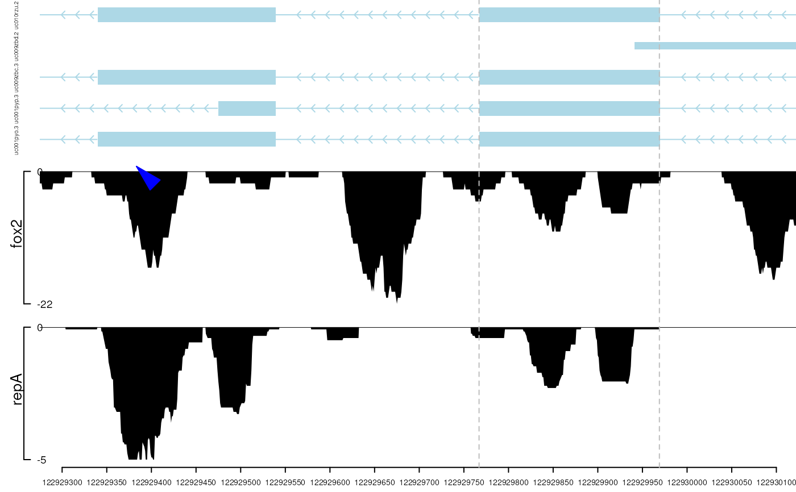

trackViewer-package.RdA package that plot data and annotation information along genomic coordinates in an elegance style. This tool is based on Gviz but want to draw figures in minimal style for publication.
Maintainer: Jianhong Ou jianhong.ou@duke.edu (ORCID)
Authors:
Julie Lihua Zhu Julie.Zhu@umassmed.edu
library(TxDb.Hsapiens.UCSC.hg19.knownGene) library(org.Hs.eg.db) trs <- geneModelFromTxdb(TxDb.Hsapiens.UCSC.hg19.knownGene, org.Hs.eg.db, chrom="chr11", start=122929275, end=122930122) extdata <- system.file("extdata", package="trackViewer", mustWork=TRUE) repA <- importScore(paste(extdata, "cpsf160.repA_+.wig", sep="/"), paste(extdata, "cpsf160.repA_-.wig", sep="/"), format="WIG") strand(repA@dat) <- "+" strand(repA@dat2) <- "-" fox2 <- importScore(paste(extdata, "fox2.bed", sep="/"), format="BED") dat <- coverageGR(fox2@dat) fox2@dat <- dat[strand(dat)=="+"] fox2@dat2 <- dat[strand(dat)=="-"] gr <- GRanges("chr11", IRanges(122929275, 122930122), strand="-") vp <- viewTracks(trackList(repA, fox2, trs), gr=gr, autoOptimizeStyle=TRUE)